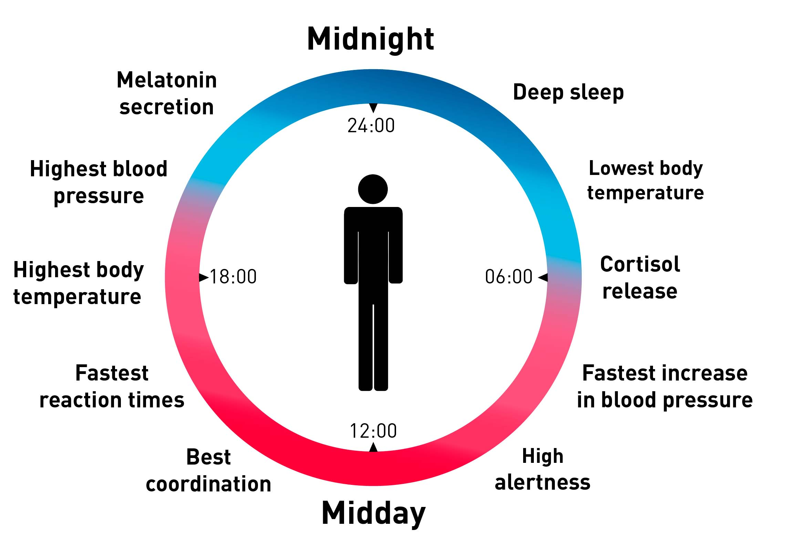

1. Introduction to Human Factors
CREW - BECOMING A COMPETENT PILOT
· Competency
- Commonly described as a combination of skills, knowledge and attitudes that enable an individual to perform a task or an activity successfully within a given context.
- EASA defines 9 competencies that, when developed, provide strong resilience to the pilots:
- Application of knowledge
- Application of procedures and compliance with regulations
- Communication
- Flight Path Management - Automation
- Flight Path Management - Manual handling
- Leadership and teamwork
- Problem solving and decision making
- Situation awareness and management of information
- Workload management
CREW - FITNESS REQUIREMENTS
· Crews must meet the following requirements to be consider themselves fit for flying.
- Medical and physical fitness
- Holder must hold a medical certificate to complete the license
- Aeromedical disposition
· Decrease in medical fitness
- Pilots must not exercise the privileges of the license if they are aware of a decrease in their medical fitness.
- AME must be notified when:
- Admitted to hospital
- Injury / Illness lasting for more than 21 days
- Pregnancy
· Time to wait before flying after donations
- 24 hours - blood. Increased susceptibility to fainting.
- 48 hours - bone marrow
THE SHELL MODEL· Introduction
|
· Components
- Liveware
- The liveware is the human participant
- This is the most critical component, sitting at the centre
- Among all, this is the least predictable
- Hardware
- The physical features and layout of an aircraft, workspace or avionics
- Software
- Includes non-physical aspects, such as manuals, documentation, regulation, etc
- Environment
- Economic, social and natural environment issues
- Liveware
- A relationship between the central liveware and another liveware represents interactions between flight crew and the airline organization
· Interfaces
- Liveware-Hardware interface
- It's the "man-machine system"
- The machine must be designed to match the human characteristics
- Liveware-Software interface
- It's the interface between the "man and the intangible objects"
- Software must be capable of being implemented into operation and easily understood and managed by flight crew
- Liveware-Environment interface
- Flight crews must remain at a suitable environment
- This involves pressurizing cabins, using earphones, googles, protection from radiation, etc, temperature regulation.
- Liveware-Liveware interface
- Interactions between flight crew and cabin crew, ATC, airline, ground crew, etc
2. Flight safety concepts. Safety culture and TEM
FLIGHT SAFETY CONCEPTS
· Accident statistics
- 1 accident per million aircraft movements
- Flight crew is the largest cause of accidents (70%)
- GPWS was the biggest contributor to flight safety (70%)
THE SAFETY CULTURE
· Safety culture
- Safety culture refers to the enduring value, priority and commitment placed on safety by every individual and every group at every level of the organization.
- Safety culture reflects the individual, group and organizational attitudes, norms and behaviors related to the safe provision of air navigation services.
- Safety culture is a subset of national culture.
- Management has the responsibility for creating and maintaining it.
· According to James reason, the safety culture is formed by 5 components:
- An informed culture
- The organization should collect and analyze data.
- A reporting culture
- The organization should create an atmosphere where people have confidence to report safety issues and concerns.
- A learning culture
- The organization is able to learn from its mistakes and make changes.
- A just culture
- Errors shouldn't be punished if they are unintentional.
- However, deliberate and unjustifiable violations should be subject to disciplinary action.
- This is different from a non-punitive culture, where deliberate violations are not punished.
- A flexible culture
- Organization and employees effectively adapt to changing demands
THREAT AND ERROR MANAGEMENT
· There are three components in the TEM model
- Threats
- Errors
- Undesired Aircraft States (UAS)
· Threats
- Threats are events that occur beyond the influence of the flight crew
- Threats increase operational complexity, and must be managed to maintain the margins of safety
- Unmanaged threats lead to an UAS
- Threats are divided into:
- Anticipated threats. Threats expected by flight crew, such as thunderstorms, airport complexity, surrounding terrain, etc
- Unanticipated threats. Threats that occur unexpectedly, such as aircraft malfunctions, unforecast weather, unexpected traffic
- Latent threats. Threats that are not directly obvious to flight crew, and generally exist for a long time before they are detected, such as design issues or consequences of rostering.
· Errors
- Defined as actions or inactions by the flight crew that lead to deviations from flight crew intentions.
- They are usually originated by external threats when poorly managed.
- Errors are divided into two groups:
- Slips and lapses are failures in the execution of the intended action.
- Pulling the mixture instead of the (intended) carburetor heat is a slip.
- Forgetting to apply the carburetor heat is a lapse.
- Mistakes are failures in the plan of action.
- Even if the execution of the plan is correct, it will not lead to the intended outcome.
- Slips and lapses are failures in the execution of the intended action.
- The TEM model considers 3 categories of errors:
- Aircraft handling. Involves both, manual handling and flight path management through automation.
- Procedural. When incorrect interaction with a procedure (checklist, SOPs, callouts, briefings)
- Communications. When interacting with other people (other crew members, ATC, AOC)
· Undesired Aircraft States
- Defined as flight crew-induced aircraft position or speed deviations, misapplication of flight controls, or incorrect systems configuration, associated with a reduction in margins of safety.
- UAS result from ineffective threat and error management.
- Three categories of UAS:
- Aircraft handling. For example, upset aircraft attitudes, unnecessary weather penetration, vertical, lateral and speed deviations.
- Ground navigation. They involve proceeding towards wrong runway, using wrong taxiway, among others.
- Incorrect aircraft configurations. Incorrect use of systems, flight controls, automation, etc.
ERRORS
· Error statistics
- An error generally leads to another
- 4 - 7 errors needed in a chain to end up in an accident
- Usually, first error is deviation from SOPs
- Error rate for repetitive tasks is 1 in 100
- If trained, error rate can be reduced to 1 in 1000
· Errors of omission, commission and substitution
- Omission: not doing something that should have been done (forgetting checklist)
- Commission: Doing something that shouldn’t have been done (take-off without clearance)
- Substitution: Trying to do something correct but ending up with a mistake (operate flaps instead of gear)
· Rasmussen classification of errors
- Accidental errors: Genuine mistakes
- Errors of anticipation: When making incorrect assumptions
- Errors of compensation: When over-correcting
- Errors of transposition: transposing letters or numbers
· Classification of errors according to frequency
- Sporadic: A very rare event.
- Random: Somehow repetitive errors, but which show no pattern.
- Systematic errors: Repetitive errors that have something in common, following a pattern.
· Error tolerance
- Single errors shouldn't have a serious impact on flight safety.
COUNTERMEASURES
· Countermeasures are employed to keep threats from evolving into UAS, increasing margins of safety.
- Two types of countermeasures
- Hard countermeasures: Systems that are already in place (EGPWS, TCAS, etc)
- Soft countermeasures: The human influence and the training.
- Three categories of countermeasures
- Planning countermeasures. They manage threats (flight planning, briefing, workload assignment)
- Execution countermeasures. They manage error detection and response (crew members actively monitoring, proper management of automation, prioritization of operational tasks)
- Review countermeasures. They manage the changing conditions of a flight (evaluation and modification of plans, analyzing decisions and actions, etc)
- Training is the hard link that provides crews with the countermeasure skills.
- ATM approach to it: Avoid, Trap and Mitigate
· Within knowledge, skill and attitude, knowledge is the most prone to error
THE SWISS CHEESE MODEL
· The Swiss Cheese Model
|
3. Atmosphere & Gas Disorders
ATMOSPHERE CHARACTERISTICS
· Volume percentage of gases in ambient air is constant up to 100 km of height.
- 78% nitrogen
- 21% oxygen
- 0.03% CO2
· Atmospheric pressure and oxygen partial pressure.
| Altitude | Total atmospheric pressure | O2 partial pressure (21%) |
|---|---|---|
| 33.000 ft | 190 mm Hg (1/4 sea level) | 40 mm Hg |
| 18.000 ft | 380 mm Hg (1/2 sea level) | 80 mm Hg |
| Surface level | 760 mm Hg | 160 mm Hg |
· Atmospheric physiological zones
- MSL - 10.000 ft. Physiological zone.
- Fine for a normal healthy individual
- 10.000 - 60.000 ft. Physiological Deficient Zone
- First symptoms of hypoxia begin at about 10.000 ft
- Above 60.000 ft. Space Equivalent Zone.
- Even 100% oxygen breathed under pressure is not sufficient
GAS LAWS
| LAW | STATEMENT | APPLICATION |
| Charles' Law | At constant pressure, temperature is proportional to volume | Trapped Gas Disorders |
| Boyle-Mariotte's Law | At constant temperature, pressure is inversely proportional to volume | Trapped Gas Disorders |
| General Gas Law | for fixed mass of a gas under any set of conditions of V, P and T, the value of PVT must remain constant. | Trapped Gas Disorders |
| Dalton's Law | In a mixture of non-reacting gases, the total pressure exerted is equal to the sum of the partial pressures of the individual gases | Hypoxia |
| Fick's Diffusion Law | A diffusion processes movement of molecules from higher concentration to a lower concentration region | Hypoxic hypoxia |
| Henry's Law | The amount of gas dissolved in a liquid is directly proportional to the partial pressure of the gas in the solution. | Decompression sickness |
TRAPPED GAS DISORDERS
· Climb disorders
- During climb, atmospheric pressure decreases. Thus, the volume of gases inside a human body expands.
- If the escape of expanded gases is impeded, pain will result (This pain is known as "Dysbarism")
· Gastrointestinal pain (stomach)
- Gases in the gastrointestinal system may have difficulties to escape.
- Above 25.000 ft of physiological altitude, severe pain is possible
- Prevention: Avoid gassy drinks and legumes before flying!
- Relief: Burping and farting
· Octic barotrauma
- Pressure must be balanced in either side of the eardrum. This is achieved through the Eustachian Tube.
- If pressures are not balanced eardrum will be forced inwards / outwards, which causes pain.
- If Eustachian tube is blocked, it middle ear is "blocked" at the pressure at which blockage occurred.
- Pressure vertigo happens when only one of the ears is not clear through the Eustachian Tube. Results in dizziness. Can be incapacitating and cause loss of control.
- Harder for the body to equalize eardrum pressure during descent since tube must be actively opened by swallowing, Valsava maneuver or Frenzel maneuver.
· Sinus barotrauma
- Sinuses can be blocked due to infections / cold
- Prevents air equalization
- Climb: expanding gases can’t escape, creating pain
- Descent: Vacuum is created, creating pain and a feeling of unease.
- Relief: stop climbing or descending
· Aerodontalgia
- Gas becomes trapped in teeth cavities.
- When gases expand during climb, pain results
- Relief: descend
EVOLVED GAS DISORDERS
· Nitrogen absorption
- Nitrogen is absorbed into the blood
- When pressure decreases, N2 comes out of blood (bubbles merge). Blockages can occur, causing death.
DECOMPRESSION SICKNESS (DCS)
· Onset of Decompression Sickness (DCS)
- Nitrogen is absorbed into the blood.
- If a rapid decrease of pressure occurs, nitrogen will be released into the blood and bubbles will form (Henry's Law)
- Bubbles create blockages, which can lead to tissue death.
· Conditions
- Unlikely below 14.000 ft
- Hardly ever below 18.000 ft
- Likely after an explosive decompression at high altitude.
· Symptoms
- Bends - Deep pain in joints. Primary symptom. May be reduced by adopting a comfortable position
- Creep - Intense itching. Mainly affects upper body
- Chokes (lungs) - Chest pain under the sternum. Aggregated when breathing
- Staggers (brain) - Problems such as loss of balance, nausea and vomiting
· DCS treatment
- Descend
- Post-descent collapse can occur up to 12 hours later. Seek AME advice ASAP
- Hyperbaric chamber may be required
· DCS Susceptibility changes with altitude, duration of exposure, age, obesity, etc
· SCUBA diving
- When SCUBA diving, air is breathed under positive pressure, increasing pressure gradient between air in the blood and air outside.
- Flying after SCUBA diving is subject to the following limitations due to the increased risk of DCS:
| Down to 30 ft underwater | More than 30 ft underwater | Snorkeling |
| 12 hours | 24 hours | No limitations |
4. Respiratory & Circulatory Systems
RESPIRATORY SYSTEM
INTRODUCTION
· Functions of the respiratory system
- Production of energy
- Body temperature regulation
- Chemical regulation
FUNCTIONS OF RESPIRATORY SYSTEM
· Metabolic process
- Intake: O2, food
- Outtake: CO2, energy, water vapor
· Temperature regulation
- Body targets 37ºC
- If body is too hot, warm humid air is released through breathing
- Perspiration and radiation are also used to regulate temperature
· Chemical regulation
- When CO2 dissolves in the body, carbonic acid is produced, making the body more acidic
- If body is too acid -> breathing rate increases to remove CO2
- If body is too alkaline -> breathing rate decreases to increase CO2
RESPIRATORY SYSTEM
· Anatomy of the respiratory system
- Nasal passage
- Pharynx
- Epiglottis
- Trachea
- Esophagus
· Lungs anatomy
- Trachea
- Left and right bronchi
- Bronchioles
- Alveolar sacs
· Lung capacity
- Tidal volume: 500 ml
- Expiratory reserve: 1000 ml
- Inspiratory reserve: 3300 ml
- Residual volume: 1200 ml
- Total lung volume
- Male: 6 liters
- Female: 4.2 liters
· Breathing rate
- 16/18 times per minute
- Regulated by amount of CO2 in blood
· Air composition in the lungs
- 100 mm Hg O2
- 40 mm Hg CO2
EXTERNAL AND INTERNAL RESPIRATION
· Respiration takes place in 2 stages
- First, external respiration takes place in the lungs.
- Oxygen is breathed in and is diffused into blood
- Carbon dioxide reaches the lungs and is breathed out
- Second, internal respiration takes place in the cells and body tissues.
- Oxygen diffuses through the capillaries to cells
- Carbon dioxide is diffused from the cells into the capillaries
CIRCULATORY SYSTEM
INTRODUCTION
· Functions
- Transports blood through the body
- Carries oxygen and nutrients to tissues, allowing for metabolization
- Removes carbon dioxide from cells
- Helps on temperature regulation
· Temperature regulation
- Temperature falls: Blood vessels contract so heat is conserved
- Body temperature rises: Blood vessels dilate, resulting in heat loss
· Fick’s Law
- Lungs and tissues are where O2/CO2 are exchanged
- Exchange takes place via diffusion
THE HEART
· The heart is the muscle that pumps blood around the body.
- Formed by 4 chambers: 2 upper (Atria) and 2 lower (Ventricle)
- Atrias are entryways
- Ventricles are the exit gateway, pumping the blood outside
- 4 one-way valves prevent blood from going the wrong way
- Coronary arteries and veins are used to provide blood to the heart itself
· Factors affecting heart rate
- Exercise
- Body temperature
- State of digestion
- Caffeine-drugs
- Stress
· Average cardiac output
- 70 bpm x 75 ml per beat = 5.2 liters / min
· Blood pressure
- During systolic phase (contraction of the heart), ideally around 120 mm Hg
- During diastolic phase (expansion of the heart), ideally around 80 mm Hg
- Measured in the artery of the upper arm at the same height as the heart
- Body senses pressure via pressoreceptors located in the neck
BLOOD VESSELS
· Blood vessels form a system of arteries, capillaries and veins
- Arteries carry blood away from the heart
- Veins carry blood into the heart
- Capillaries connect arterioles (small arteries) to venules (small veins)
BLOOD
· Blood functions
- Transports oxygen and nutrients to cells
- Removes CO2 and waste from cells
- Carries chemical substances that govern our behavior (adrenaline, etc)
- Protects human body through fighting infections and clotting blood
· Blood lifespan
- Blood is produced in the bone marrow
- Average lifespan: 140 days
· Composition
- Plasma:
- About 55% of the blood is plasma
- Function: Transports CO2
- Cells
- Around 45% of the blood are cells
- Red blood cells: Hemoglobin (transport of oxygen)
- White blood cells: Fight against infections
- Platelets: Clot blood
DISORDERS
· Tension disorders
- Hypertension: when arterial blood pressure exceeds 140/90 in young adults
- Hypotension: a state of low blood pressure
· Angina
- Situation where the demand for blood is higher than the supply of blood
- A major cause is a narrowing on the coronary artery
- Symptoms: Crushing pain
- Stops after rest and medication
· Heart attack (Myocardial Infarction)
- It's the irreversible death of heart muscle tissue due to a lack of oxygen.
- Happens when blood supply to heart (coronary artery) is blocked
- It doesn’t disappear after rest and medication
- Major cause of death in men over the age of 40
- Defibrillators aren't designed to deal with heart attacks.
- Risk factors:
- Family history is the biggest risk factor, according to EASA
- Age
- Smoking
- Exercise
- Diet
· Cardiac arrest
- Heart suddenly stops beating
- Blood is no longer pumped blood around the body
- Cause: disordered electrical activity prevents the heart from normal activity
- Defibrillators are designed to return the heart to normal beat
- Always use defibrillators if in doubt between a heart attack or cardiac arrest
· Anemia
- Insufficient hemoglobin —> insufficient red blood cells -> insufficient oxygen
- Causes: poor diet, bleeding, infections
· Circulatory shock
- Inadequate circulation of blood
- Can cause tissue death
· Effect of smoking
- Smoking causes inhalation of carbon monoxide (CO)
- CO has 200 times more affinity than O2, giving a physiological altitude of 4000 - 5000 ft.
· Effect of alcohol
- An ounce of alcohol adds 2000 ft to your physiological altitude, reducing tolerance to hypoxia
· Stroke
- When blood supply to the brain is cut off
- Caused by a clotted, blocked or ruptured blood vessel
· Faint
- It's a reduction in blood supply to part of the brain
- Temporary condition
· FIT
- Electrical disturbance in the brain
· Deep vain thrombosis (DVT)
- Blood clot in a deep brain
5. Hypoxia & Hyperventilation
HYPOXIA
· Hypoxia is defined as a "condition that occurs when oxygen supply to the human tissues is insufficient to meet their needs"
· Types of hypoxia
| Type | Description | Causes |
| Hypoxic hypoxia | Inadequate diffusion of oxygen into the blood | Altitude |
| Hypaemic hypoxia | Reduced carrying capacity of the blood | CO poisoning |
| Stagnant hypoxia | Inadequate circulation of blood | Extreme G manoeuvres |
| Histotoxic hypoxia | Cells can't use oxygen efficiently | Cell contamination (e.g, alcohol) |
· Hypoxia signs & symptoms
- Signs
- Cyanosis (blue skin)
- Loss of judgement
- Apparent personality change
- Muscular and memory impairment
- Hyperventilation
- Loss of consciousness
- Symptoms
- Euphoria
- Sensory loss
- Feeling of ease, well-being
- Deterioration of vision
- High pulse rate
- Loss of consciousness
- Note: joint pain or suffocation are NOT symptoms of hypoxia
· Risk factors
- Alcohol
- Smoking history
- Poor diet
- Exposure to very high temperatures
- Lack of exercising
- Brain condition
· Stages of hypoxia
- 0 - 10.000 FT - Indifferent stage
- Body is able to compensate the decreasing oxygen partial pressure associated with height
- Above 5000 ft, however, night vision is deteriorated
- 10.000 FT - 15.000 FT - Compensatory stage
- Breathing and pulse rates increased.
- Can get hypoxic effect after 10 / 15 min
- Short term memory deteriorated from 12.000 ft
- 15.000 FT - 20.000 FT - Disturbance stage
- Body can’t compensate anymore
- Above 20.000 FT - Critical stage
- Mental and physical incapacitation likely in a short period.
- Can lead to death if lack of oxygen is prolonged.
TIME OF USEFUL CONSCIOUSNESS (TUC)
· Time of Useful Consciousness (TUC) definition
- Time from interruption of oxygen supply to loss of ability to take corrective action
| Altitude | TUC for a person at rest |
|---|---|
| 20.000 ft | 30 minutes |
| 25.000 ft | 2 - 3 minutes |
| 30.000 ft | 1 - 2 minutes |
| 35.000 ft | 30 - 90 seconds |
| 40.000 ft | 15 - 20 seconds |
· Factors affecting Time of Useful Consciousness:
- Physical activity can significantly reduce the TUC
- For example, at 20.000 ft, a moderately active person would only have 5 minutes of TUC
- Illness. Illnesses increase energy demand of the body, reducing margin to hypoxia
- Fatigue
- Drugs and alcohol
- Smoking
PREVENTION
· Prevention of hypoxia
- Avoid unpressurized flight above 10.000 ft, unless totally unavoidable
- Never fly above 14.000 ft without oxygen
· If depressurization occurs -> first action is to put on the oxygen mask
HYPERVENTILATION
· Definition
- A condition of excessive rate and depth of respiration
· Triggers of hyperventilation
- Psychological: fear, anxiety, stress
- Physiological: hypoxia, pressure breathing
· Indications of hyperventilation
- Dizziness
- Tingling sensation
- Visual disturbances
- Anxiety
- Impaired performance
- Ultimately, loss of consciousness
· Chemical consequences of hyperventilating
- Effect on CO2
- CO2 is a vasodilator (it widens arteries and veins)
- If too much CO2 is lost due to hyperventilation, vasoconstriction (narrowing) can occur.
- Vasoconstriction produces a tingling sensation in the extremities.
- Effect on O2
- When alkalosis occurs, O2 has greater affinity to hemoglobin
- As a consequence O2 has is less prone to being diffused into the cells.
· Treatment
- Consciously reduce rate of breathing
- Breathe into a paper bag
· Hypoxia vs hyperventilation
- Because most symptoms and signs are common, it can get difficult to distinguish between hypoxia and hyperventilation
- Above 10.000 ft, suspect hypoxia
- Below 10.000 ft, suspect hyperventilation
- Cyanosis, however, is unique to hypoxia. If you see cyanosis, discard hyperventilation.
6. High altitude environment
RADIATION
· Sources of radiation at high altitude
- Terrestrial
- Artificial
- Cosmic (weakest at poles)
- Galactic
- Solar
· Effect of altitude in radiation
- Radiation is absorbed by Earth's atmosphere and magnetic field
- At high altitudes, received doses become 2-3 times greater
· Effects of excessive exposure to radiation
- Radiation can damage the DNA in our cells
- High doses of radiation can cause Acute Radiation Syndrome (ARS) or Cutaneous Radiation Injuries (CRI)
- High doses of radiation could also lead to cancer later in life.
· Operators are required to monitor the radiation levels received by employees
- Annual radiation limit: 20 millisieverts (mSv)
- Aircraft operating above 49.000 ft / 15.000m must carry a Dosimeter, which must record instant and accumulated radiation.
OZONE
· Ozone filters UVB
· Ozone is toxic, since it destroys lung tissue
· Ozone concentration
- Negligible below 40.000 ft
- Peaks at 115.000 ft
- Greatly reduced above 140.000 ft
· Protection
- Ozone converters
- Destroy with heat - Ozone is destroyed at 400ºC
MISCELLANEOUS
· Humidity: Can be as low as 10% in a cabin environment
· Typical cabin altitude ranges between 6000 - 8000 ft
7. Drugs, alcohol, smoking, caffeine and miscellaneous
DRUGS
· Types of commonly used drugs
- Antibiotics. Fight infections
- Antihistamines. Fight allergies.
- Older antihistamines' side effects may include drowsiness, dry mouth, headaches and nausea.
- Make sure you know you are free of side effects before flying!
- Analgesics. Pain killers
ANESTHETICS
· Flight limitation after receiving anesthetics
- Local: wait 12 hours before flying
- General: wait 48 hours before flying
ALCOHOL
· Alcohol:
- Acts as a Central Nervous System depressant
- Side effects:
- Degrades judgement, G-tolerance, sleep quality, spatial orientation and vision.
- Intensifies effects of drugs
· Measuring alcohol
- 1 unit of alcohol = 15 mg per 100 ml of blood = half pint or a glass of wine
· Maximum weekly intake guidelines
- Male: 28 units a week
- Female: 21 units a week
· Flying limits: 20 mg / 100 ml of blood
- You should never fly under the influence of alcohol however
· Time "from bottle to throttle"
- 8 hours for small consumptions
- 24 hours for large consumptions
SMOKING
· Main components of cigarettes
- Nicotine: It's the addictive part
- Tar: It's the carcinogen part.
· Consequences of smoking 1 pack (20 cigarettes) a day:
- Physiological altitude risen up to 4000 - 5000 ft
- 5-8% oxygen capacity given up
- This is due to Carbon Monoxide poisoning
CAFFEINE
· Caffeine
- Central Nervous System stimulant
- In small doses, improves alertness, thought and muscle coordination, and physical performance
- Pilot performance, however, could be affected by as little as 250 mg
TOXIC MATERIALS
· Toxic materials
- Severity of effects depend on the amount and time of dosage
- Initial actions on skin contact with fuel or hydraulic fluid: wash with copious amount of water, don’t use soap initially
- Mercury is prohibited on board aircraft since, when in contact with aluminum, it releases toxic fumes and it’s highly reactive
DIET GUIDELINES
· Breakfast should account for 25% of your daily caloric intake
· Hypoglycemia:
- A condition of low sugar in the blood
- Can cause dizziness
- Eating small snacks between meals can help prevent dizziness associated with hypoglycemia
- Don't fly on an empty stomach!
TROPICAL DISEASES & MEDICAL HAZARDS
| DISEASE | SOURCE |
|---|---|
| Malaria | Mosquitos - Worlds biggest killer! |
| Yellow fever | Mosquitos |
| Dengue | Mosquitos - by day only! |
| Hepatitis B/C | Contaminated needles and sex |
| Tetanus | Open wounds |
| Tuberculosis | Coughs and sneezes |
| Rabies | Animals |
| Cholera, typhoid, dysentery and Hepatitis A | Contaminated food & water |
· Aircraft may be sprayed with insecticide 30 minutes prior to landing to prevent transmission of diseases.
INCAPACITATION
· Incapacitation
- Definition
- When a crew member is unable to perform their job to the require level
- Types.
- Obvious
- Subtle (most dangerous). Considered when crew gives no response to 2 verbal communications or no response to any verbal communication along with SOPs
- Prevention:
- Crew must eat different meals to avoid potentially contaminated food
- After a meal, ideally wait 90 minutes before flying
- Actions:
- Take control
- Use automation
- Alert cabin crew and ATC
· Gastrointestinal issues are is most common cause of incapacitation!
OBESITY
Body Mass Index: Weight / Height²
- 18.5 - 25 normal
- 25 - 30 overweight
- > 30 obese
- For girls, those figures are reduced by one
· Causes
- Too much calorie intake
- Not enough exercise
· Prevention
- Exercise
- Maintain a healthy diet
· Experts suggest that exercise for 20 minutes 3 days a week is enough to stay healthy, if combined with a proper diet.
DIABETES
· Insulin
- Insulin is the hormone which enables cell to absorb glucose from blood
- Without glucose, cells can not generate energy
· Types of diabetes
- Type 1: Insulin is not produced. Can be "solved" through injections of insulin.
- Requires an epi-pen to introduce insulin into the body.
- Type 2: Insulin not properly used by cells.
- Obesity plays a big role in this one.
- If sugar is not absorbed from blood, high blood sugar levels can appear.
FIT VS FAINT
· Fit vs Faint
- FIT:
- Electrical disturbance in the brain
- AKA Seizure
- Detected by an Electroencephalography (EEG)
- Faint
- Lack of blood sugar supply to brain
- AKA Syncope
BACK PAIN
· Common causes
- Tension on lower muscles
- Shaped disc
- Different length of extremities
· Relief
- Physiotherapy
- Surgery
- Exercise
- Lumbar support and seat adjustment
8. Sight and hearing
SIGHT
PARTS OF THE EYE
· Cornea
- First layer through which light rays pass
- It's curved, producing some refraction of the rays
- Provides about 70% of focusing
· Iris
- Between cornea and lens
- This is the colored part of the eye
- Leaves a small round aperture known as the "pupil"
- The pupil changes its size to adjust for the amount of light entering the lens
- In bright conditions, pupil becomes small
- In dark conditions, pupil increases size
· Lens
- Achieves 30% of focusing
- Changes its size through the ciliary muscles surrounding it, allowing for a range of 16-30 dioptries
· Retina
- Converts light into electrical signals.
- Centre of retina is called "Rovea"
- Made of rods & cones
- Rods are located round the edges, and are responsible for grey scale (scotopic) vision
- Cones are located at the centres, and are responsible for color (photopic) vision
· Optic nerve
- Nerve fibres that carry visual signals to the brain for processing
- The attachment of the optic nerve causes a small blind spot in the field of view
VISION
· Adaptation to darkness
- Rods contain Rhodopsin, which must build up for 30-45 minutes for darkness
- That process requires oxygen, so can be affected from altitudes from 5000 ft
- Note that cones are useless in dark conditions
· Adaptation to brightness
- Takes around 10 seconds
- Bright light destroys any produced Rhodopsin
· Accommodation
- Ability of the eye to alter its focal length, which allows a person to focus several distances
· Saccades
- When the eye moves, it moves in small steps called "saccades"
- During a saccade, cones don’t function (approximately 0'3 seconds)
- When scanning the sky for traffic, in order to give the eye time to adjust, wait 3-5 seconds before moving onto the next section
· Blind spots
- Day blind spot
- The connection of the nerve to the retina has no rods and cones
- This creates a blind spot around the centre
- Usually compensated by the other eye
- Night blind spot
- An area 5-10º around the centers
- Remember that, at night, Rovea (area where cones are located) is “useless”
· Visual acuity
- Definition of a 20/20 vision: Can distinguish 2 points at 1 minute of arc from a 20 feet distance
· Blue and Ultraviolet light
- It's on the high-energy side of the spectrum
- Can damage the lens and/or retina of the eye
· Empty field myopia
- Without any stimulus, the eye lens focuses on an object 1’5 / 2 m away.
- Distant object, such as other aircraft, will be out of focus and difficult to detect.
- More likely in a clear, featureless sky.
- Solution: focus on a distant object beyond 6 m, then continue scanning for aircraft.
· Constant bearing problem
- If flying next to a converging aircraft, its position will be fixed in your field of view
- Relative motion of that converging aircraft will be 0
- Detecting it by relying on peripheral vision is impossible.
- Look out to scan for traffic!
HIGH LIGHT LEVELS
· Flash blindness
- Can occur during night if exposed to a sudden bright light (for example, lightning)
- Turn up cockpit lights and look inside if possible to avoid the shock
· Flicker vertigo
- Caused by revolving helicopter blades
- Avoid changes in brightness
· Sunglasses
- Ideal qualities: thin frame, good quality, fit easily under headset
- They reduce exposure to UV and blue light
- Polarized sunglasses shouldn’t be used in aviation.
- Photocromatic sunglasses are useless for flying since they require UV light which cockpit windows block.
DISTANCE & DEPTH PERCEPTION
· Methods for measuring distance in a binocular vision
- Stereo.
- Each eye's image is added
- Objects close to the observer will be seen from different angles in both images
- Convergence
- When focusing on an object, both eyes look in a converging angle
- The closer the object, the the more conversion that eye sight lines have, which determines the distance
· Perceiving distances in a monocular vision can be achieved by:
- Texture and visual details
- Clarity of the image
- Contrast and colour brilliance of objects
- Overlapping of near objects over far objects
- Apparent, relative and known size of objects
· Motion parallax
- It's the visual appearance that close objects appear to be moving faster than distant objects
- This can lead to overspeeding in high cockpits such as the A380.
VISUAL DEFECTS
· Myopia (Short-sightedness)
- When cornea and lens form the image in front of the retina
- Near objects may be seen clearly, but distant objects are blurred
- Corrected through concave lens
· Hypermetropia (Far-sightedness):
- When cornea and lens form the image beyond the retina
- Distant objects may be seen clearly, but near objects are blurred
- Corrected through convex lens
· Astigmatism
- Unequal curvature of the cornea and lens
- Produces distorted images
- Corrected through cylindrical lens
· Presbyopia (Age-related far-sightedness)
- Hardening of the lens with age (likely at about 40 years old)
· Cataracts
- The progressive clouding of the lens of the eye
- Treatment is by laser surgery
VISUAL ILLUSIONS
· Width
- Wide runway: Leads to high approach, early flare
- Narrow runway: Leads to low approach, late flare
· Runway slope
- Downsloping runway. You tend to see the runway from a "flat" perspective, which makes you think that you are too low.
- Upsloping runway. You tend to see the runway from a "satellite" perspective, which makes you think that you are high.
· Terrain slope
- Downsloping terrain: During the approach, you are closer than usual to terrain, which makes you think you are too low
- Upsloping terrain: During the approach, you are farther than isual from terrain, which makes you think you are too high
· Black hole effect
- At night, or when no visual references are available, it's difficult to perceive height above the ground.
- Leads to flying a low approach.
- Made worse when there are city lights or rising terrain beyond the end of the runway.
· White out
- When an overcast sky and clear ground merges, it can be difficult to distinguish the horizon, and, therefore, perceive your aircraft attitude (unless IFR rated)
- Can lead to Controlled Flight Into Terrain (CFIT)
· Lighting intensity
- Bright lightning appears closer. Since you think you are closer to the runway, you will descend.
- Dim lighting. You will think you are still far from the runway, with a tendency to end up high.
· Rain, haze, fog
- Rain on windshield: Due to refraction, it appears that you are high. Temptation to fly a low approach
- Entering shallow fog: Incorrectly perceived as pitch up: Temptation to pitch down
· Auto-kinetic illusion
- When staring at a light at night, it appears to be moving.
- Caused by the lack of visual references around that light to measure movement.
· Protective measures against all visual illusions:
- Discuss threats and countermeasures in your briefings
- Trust your instruments!
SUMMARY OF VISUAL ILLUSIONS
| Cause | Perception | Unintended action | Resulting approach | Consequence |
| Narrow runway | Too high | Pitch down / descend below glidepath | Too low and shallow | Land short / Insufficient flare / Hard landing |
| Upsloping runway | ||||
| Upsloping terrain | ||||
| Wide runway | Too low | Pitch up / climb above correct glidepath | Too high and steep | Land long / Flare too early / Low altitude stall |
| Downsloping runway | ||||
| Downsloping terrain | ||||
| Dim runway lights | Runway further away | Pitch up / Reduce rate of descent | Too high | Land long |
| Bright runway lights | Runway very close | Pitch down / Increase rate of descent | Too low | Land short |
| Rain on windshield | Too high | Pitch down | Too low / shallow | Land short / Insufficient flare / Hard landing |
| Entering shallow fog | Pitch up | Pitch down | Too low | Land short / Insufficient flare / Hard landing |
SPECTACLES
· Types
- Half moon / look over: They correct near vision
- Bifocal: They correct near and far vision
- Variphocal: Lack of peripheral vision
· Class 1 can be conditioned to carrying a spare pair of glasses
· Contact lenses
- Less affected by weather, don’t steam up, wider FOV
- Can be irritating if they dry up
- Never use bifocal contact lenses
· Laser eye surgery: Contact AME to assess viability
HEARING
HUMAN ANATOMY
· The Ear is divided into three sections.
- Outer Ear
- External ear (auricle)
- Outer canal
- Eardrum. A membrane that divides outer from inner ear.
- Middle Ear
- Air-filled cavity
- Contains ossicles (3 small bones - hammer, anvil and stirrup), which transmit sound waves to the inner ear.
- Eustachian Tube. A canal that links middle ear with the back of the nose.
- Inner Ear
- Cochlea converts mechanical energy into electrical signals
- Organs responsible for human orientation are located here
HUMAN LIMITATIONS
· Listening & Speaking rate
- Listening rate: 500 words per minute
- Speaking rate: 125 words per minute
· Hearing limitations
- Hearing range: 20 Hz - 20.000 Hz
- Hearing intensity: Pain threshold is 140 dB
- Total noise energy: Depends on loudness, time and frequency of exposure
HEARING PROBLEMS
· Hearing loss types
- Conductive hearing loss: sound doesn’t reach the inner ear
- Sensorineural hearing loss: due to damage of the sensory hairs / nerve fibers in the cochlea
· Noise induced hearing loss (NIHL)
- Results from damage to the cochlea hair cells
- Acoustic trauma: sudden exposure to loud noise (>140 db)
- Gradual NIHL: repeated exposure (>90 db). High frequency goes off first
· Presbycusis (Age-related hearing loss)
- This is the natural process of losing hearing due to age
- High-frequency sounds are the most affected
- Caused by deterioration of the cochlea, or the auditory nerves
9. Accelerations
INTRODUCTION
· Types of acceleration
- Linear. When speed changes in a straight line.
- Angular. When the angular velocity changes (e.g. aircraft spin)
- Radial (centripetal). The acceleration force is directed towards the centre of a circle.
· We use axes to measure the direction of the acceleration
- Gx. Longitudinal axis. Positive acceleration towards the front.
- Gy. Lateral axis. Positive acceleration towards the right hand side.
- Gz. Vertical axis. Positive acceleration upwards.
DURATION OF ACCELERATION
· Short duration (<1 second)
- Maximum vertical acceleration: 25g
- Maximum longitudinal acceleration: +-45g
· Long duration (> 1 second)
- Side effects of sustained vertical acceleration:
- 1g: Normal
- 2g: Heavy limbs
- 3g: Tunnel vision
- 4.5g: Black out
- More than 4.5g: G-LOC (Loss of consciousness)
- Best tolerance is achieved when distance between heart and brain is reduced
- In the vertical plane, negative Gs are harder to tolerate than positive Gs
COCKPIT SAFETY
· The 5 point harness is the only one that prevents submarining.
10. Spatial orientation
INTRODUCTION
· Spatial orientation is defined as the ability to perceive motion and 3D position in relation to the surrounding environment.
- The vestibular system plays an essential role in spatial orientation, since it senses accelerations.
THE VESTIBULAR SYSTEM
· Vestibular system
- Located within the inner ear
- Formed by:
- 3 Semi-circular Canals
- 2 Otoliths
· Semi circular canals
- They sense angular accelerations
- Anatomy:
- A jelly-like sac is located at each semi-circular canal.
- When movement starts, jelly lags behind, stimulating tiny hairs which measure acceleration.
- Oriented to measure:
- Up/down angular accelerations (pitch)
- Tilt (roll)
- Side to side accelerations (yaw)
- Drawback:
- At constant angular velocity, no acceleration is perceived
· Otolith organs
- They sense linear accelerations
- The utricle measures horizontal accelerations
- The sacule measures vertical accelerations
- Anatomy:
- Chalk-like crystals sitting on top of a jelly
- When linear acceleration occurs, crystals and jelly move, stimulating tiny hairs which measure acceleration.
- Drawback
- Information can be misleading
- For example, tilting head upwards makes gravity move the crystals, sensing a false acceleration
· Somatosensory system
- Senses the “seat of the pants” feeling via sub-cutaneous pressure receptors
- Only useful in VMC. Unreliable and misleading in IMC
11. Spatial disorientation
SPATIAL DISORIENTATION
· Spatial disorientation is defined as the inability to correctly interpret the aircraft attitude, airspeed or altitude in relation to the surrounding environment.
- Caused by any mismatch between two or more sensorial inputs, which leads to a false perception of aircraft attitude or state.
SOMATROGYRAL ILLUSIONS
· Somatogyral illusions occur when perceived attitude is different from real attitude.
· Sub-types:
- The leans
- The most common form of spatial disorientation
- Caused by a movement below the sensory threshold
- A false sense of bank is perceived when the aircraft returns to straight and level flight
- Graveyard spiral and spin:
- Initial sensation of spinning in a given direction
- Spin is stopped by pilot input
- Body then feels like spinning in the other direction
- As a consequence, a spin in the original direction is re-entered if pilot doesn't manage this illusion.
- Graveyard spiral
- Happens during long turns
- Eventually, the bank feels like straight and level flight
- When turning out of the bank, it feels like a turn in the opposite direction
- Coriolis / Vertigo
- Likely when you tilt your head up or down during a turn
- Two semi-circular canals are stimulated.
- Brain doesn't know how to interprete this stimuli, and a severe tumbling sensation results.
SOMATOGRAVIC ILLUSIONS
· Somatogravic illusions are illusions originated within the otolith organs, when the source of the stimulation is incorrectly interpreted.
· Subtypes
- Pitch illusion
- Illusion of pitching up during accelerations
- Illusion of pitching down during decelerations.
- Known as “oculogravic” illusions if also results in the relative displacement of objects.
- Specially critical during a go-around, since the acceleration can lead to lowering the nose towards the ground!
- Elevator illusion
- When turbulence displaces an aircraft up and down
- Can lead to overreacting.
- Inversion illusion
- After an abrupt change from a steep climb to straight and level flight, pilot can feel that it’s tumbling backwards, over-lowering the nose to compensate.
PREPRIOCEPTIVE ILLUSIONS
· Proprioceptive illusions are caused by misinterpretation of the "seat of the pants" feeling that we get through our proprioreceptors. For example:
- Entering a turn is sensed as climb
- Exiting a turn is sensed as descent
12. Air-sickness
AIR-SICKNESS
· What is air-sickness?
- Defined as motion sickness caused by flying
- Caused by disagreement between visual and vestibular systems
· Coping with air-sickness
- Minimize head movement
- Fix gaze on a stable distant horizon
- Passengers may also close their eyes for relief
· Don’t use anti-sickness medication if operating as a pilot, since it can be sedating!
13. Information processing
SENSING STIMULI
· Sensing vs perception
- Sensing: Reception of incoming stimuli, that becomes raw data without any meaning.
- Perception: Making sense of the raw sensory data, interpreting it and giving it meaning.
- Uses sensory information
- Driven by experience and expectation. It is, therefore, purely subjective.
- As a result, perception varies between individuals
· Sensory memory
- When a sense is stimulated, the stimuli is remembered just enough to allow perception to take place.
- The stimuli is temporarily stored within the sensory memory, which is capacity limited.
- Echoic memory (hearing) lasts for 2 - 8 seconds
- Iconic memory (sight) lasts for 0.5 - 1 second
· Gestalt Theory
- A set of laws that describe how humans mentally group objects into organized patterns.
- The forming elements of these groups are are:
- Proximity
- Similarity
- Continuance
- Closure
· Perception illusion
- Happens when there is a difference between what is perceived and the reality
- Illusions in flight should be treated as threats that need to be appropriately managed.
- Approach illusions: runway width, etc
- Spatial illusions: leans, graveyard, etc
ATTENTION
· Definition
- Attention is defined as concentrating on a particular stimuli / thought.
· Characteristics of attention:
- Only some of the perceptions are consciously noticed
- Attention allows us to focus on what’s relevant
- Attention is limited. We can only fully concentrate on one thing at a time.
· The main factors controlling our attention are goal and stimulus.
· Wicken’s theory
- Information presented to multiple senses has less changes of being missed.
Types of attention
- Selected attention: Tune out irrelevant sensory inputs and focus on one thing
- Divided attention (Multitasking). Rapidly switching between different stimuli and tasks
VIGILANCE
· Definition of vigilance
- Giving sustained attention to something to notice when a non-ordinary event happens
· Factors affecting the state of vigilance
- Task factors (time on task, frequency of signals, etc)
- Motivation
- Physiological (sleep loss, fatigue, etc)
- Environmental (noise, temperature, etc)
· Hypovigilance:
- A reduction in vigilance below the optimal level required for a given task
- Human beings naturally tend to divert our attention elsewhere from an unchanging parameter
14. Decision making process
INTRODUCTION TO DECISION MAKING
· What is a decision making process?
- A process that involves choosing between two or more alternative courses of action
- A proper decision making process is important in aviation, since decisions taken under certain situations can lead to totally different outcomes.
HUMAN MEMORY
· Working / Short-term memory.
- Used as temporary stage when making conscious decisions
- If information is not rehearsed, it will be lost in 10 - 20 seconds
- Has a finite capacity (generally considered to be 5 items +-2)
- Capacity can be increased through chunking:
- Chunking is a technique consisting on grouping information together so that they can be stored as single concepts.
- As an example, one generally memorizes his/her credit card numbers in groups of 4, instead of digit by digit.
· Long term memory
- Considered to be of infinite capacity
- It’s relatively permanent
- However, it can be difficult to retrieve information that hasn't been recalled for a long time
- To store new information, it must first pass through the short term memory and use techniques such as repetition and association
- Can share info to short term memory. (There’s a 2 way flow of info between both)
- Types:
- Episodic memory (of specific lifetime experiences). Can be easily influenced
- Semantic memory (memory of facts)
- Procedural memory (memory of actions / skills). Contains motor programs
· Motor programmes
- Ability to automate a task which has been carried out many times before (riding a bike)
- Frees up our capacity, but prone to errors
· Types of action
- Rule based: following learnt procedures
- Knowledge based: knowledge / experience is used to determine course of action
- Skill based: use of stored routines and motor programs
· Feedback loop: the consequences of our actions influence our future decisions
· Limited attention
- Our attention, which is limited, must be shared between perception, decision and action
- Workload is the amount of demand on our attentional resources
- Divided attention (multi-tasking). Resources are shared between several tasks
· Effects of high workload
- Task focusing
- Task shedding and re-prioritization
- Potential for reduced situational awareness
- Increase in errors
· Automatic vs conscious processing
- Conscious processing: Information is passed to the decision making part of the brain. Requires attentional resources
- Automatic processing (AKA Behavioral Sub-routine). A motor program from the long term memory is run. Doesn’t require attentional resources
- Can be unmonitored
- Prone to errors (Action slip and environmental capture)
· Amnesia
- Partial or total loss of memory
- Type 1: Inability to retrieve information from the past
- Type 2: Inability to store new information
15. Situational awareness
INTRODUCTION
· Mental model: Our cognitive model of how we perceive the world around us
- Sits within our working memory
- Requires attention, which contributes to our workload
- Allows us to communicate our view of the world and develop strong SA
- Hard to change once created. Can lead to poor decisions if inaccurate or affected by illusions
SITUATIONAL AWARENESS
· Situational awareness
- The process of creating and maintaining an accurate mental model and the projection of its status in the near future
- In other words, a good situational awareness is achieved when perception is equal to reality
· Levels of Situational Awareness
- Monitor (aircraft state, and take corrective action if needed)
- Evaluate (errors)
- Anticipate (threats)
· Factors influencing Situational Awareness
- Positively
- Briefings
- Proper communication
- Workload management
- Use of input from ATC, crew, aircraft systems (TCAS)
- Negatively
- High workload (leads to tunnel-vision)
- Boredom
- Poor mental model
- Task fixation
· Signs indicating loss of Situational Awareness
- Ambiguity
- Confusion
- Poor communications
- Task fixation
- Being heads down
- Uneasy feeling
16. Personality
INTRODUCTION
· Personality and behaviour
- Personality is who we are. Stable characteristics. Fixes since the age of 7
- Behaviour is what we do. Modifiable. We can control it.
PERSONALITY
· Measuring personality tests
- Projective tests, handwriting analysis, interviews (a bit unreliable), personality test
· Categorizing personality
BEHAVIOUR
· Importance of behaviour vs personality
- Behaviour is the most important, since it influences how people interact with each other
· Behaviour influences
- Main influences: Personality and attitudes
- Further influences: Social norms, faith and culture
· Types of behaviour
- Rule based: Following of learnt procedures
- Useful for specific situations
- Can lead to errors of commission if choosing the wrong rue
- Risks poor application of the current rule
- Knowledge based: Uses knowledge and experience
- Uses lots of capacity
- Subject to bias
- Skill based: Uses stored routines and motor programmes
- Reversion to type
- Prone to slips, environmental capture and habituation
· Aggressive, passive and assertive behaviour
- Assertive behaviour is the ideal balance
SELF-CONCEPT
· Self concept
- Self-concept: Your own belief of your personality, behaviour and attitudes
- Ideal self: How we would like to see ourselves
- Motivation: A big difference between self concept and ideal self can motivate us to change our attitudes and behaviour
- Anxiety: When self concept and ideal self don’t mach and it seems unattainable, it can cause us anxiety.
- A self concept of under confidence may lead to aggression and assertiveness
· Self discipline: is our ability to control our behaviour
HAZARDOUS ATTITUDES
· Hazardous attitudes
- Anti-authority. Rules are not for me.
- Macho. No one landed today due to crosswind? Well, I can do it.
- Invulnerability. It won't happen to me.
- Impulsivity. I have to do it now.
- Resignation. Why even bother?
- By being aware of them you can recognize when yourself / others are doing them
AUTHORITY AND FLIGHT DECK INTERACTION
· Categorizing leadership (Person orientated P+) (Goal orientated G+)
- P+ G- -> Country club leader. Tries to please everyone to the detriment of tasks
- P+ G+ -> Team leader. Includes other and leads effectively. Ideal type
- P- G- -> Impoverished leader. Lacks motivation
- P- G+ -> Authoritarian Leader. Totally task orientated, no regard for people
- Paternalistic leadership: acts as a father figure
· Qualities of a good leader
- Leads by example
- Sets clear goals
- Explains decisions
- Motivates
- Asks for opinions from others
· Flight deck interaction gradients
- Autocratic. Crew members become withdrawn and communication becomes unclear
- Synergistic: 1 + 1 > 2. Ideal gradient. Between authority and laissez-faire style
- Laissez-faire. Risk of authority inversion.
17. Communication
· Parts of communication
- Source, message, channel, receiver
· One way vs two way
- One way: no feedback available
- Two way: allows for feedback
· Obstacles to effective communication
- Intelligibility
- Ambiguity
- Size of message
- Language used
· Verbal vs non-verbal communication
- 95% of flight deck communication is verbal
· Implicit vs explicit
- Explicit: detailed message with exact communication. Clear and non-ambiguous
- Implicit: information is open to various interpretations. Intended message may be lost
· Metacommunication
- It's the “communication about the communication”
- Sum of verbal and non-verbal communication
· Professional language
- Terms and expressions used by members of the same profession
- Words adopt a specific meaning, grammar is simplified and comprehension speed is increased.
- Vocabulary may be limited in certain situations
· Conflicts
- Levels: Positive resolution (helpful), difference of opinion, confrontation, fight / flight, combat (crew performance is significantly affected on last 3)
· Good communication skills
- Inquiry
- Active listening
- Advocacy
- Meta communication
· Benefits of open questions
- Allows to give an opinion without influencing / biasing the thought process
- Promotes better engagement
- Encourages better sharing of mental models
· Dealing with conflict
- Negotiation (between those involved)
- Arbitration (using an independent 3rd party to help arrive at a solution)
18. Nervous System
INTRODUCTION TO THE NERVOUS SYSTEM
· Introduction
- The Nervous System works like an electrical system
- Electrical inputs are transmitted through nerves
· The Nervous System is divided in two parts
- Central Nervous System (CNS): Brain and spinal cord
- Peripheral Nervous System (PNS). Everything else
- The Autonomic Nervous System is a subpart of the Peripheral Nervous System
- It unconsciously regulates many of the body's basic functions. These include beating of the heart, breathing, temperature control, etc.
· Sensory Neurons vs Motor neurons
- Sensory neurons: Transmit information from sensory organs to the Central Nervous System.
- Motor neurons: Transmit information from the Central Nervous System to muscles and glands
- Somatic Nervous System (voluntary movements)
- Autonomic Nervous System (involuntary responses)
- Sympathetic division: flight of fight
- Parasympathetic division: rest or digest
· Sensory receptors
- Sensitivity can vary between sensory organs
- Can also be influenced by adaptation and habituation
· Neurons
- Axon: long nerve fibre which conducts electrical impulses
- Synapse: gap between two neurons where a chemical transmission takes place
· Reflexes
- Automatic reaction to stimulus
· The brain.
- Cerebrum: High level functions such as reasoning, emotions and learning
- Cerebellum: Coordinates muscle movements, maintains posture and balance
- Brain stem: Connects cerebrum and cerebellum to spinal cord and regulates main body functions (homeostasis)
ADAPTATION VS HABITUATION
· Sensory adaptation: After prolonged exposure to stimuli, sensory receptors develop reduced sensitivity to that stimuli.
- Occurs at a given sensory level.
· Habituation: The decreased responsiveness resulting from repeated exposure to a stimuli
- Occurs at a given cognitive level.
19. Stress
INTRODUCTION
· Homeostasis
- Homeostasis is a self-regulating process by which a living organism can maintain internal stability while adjusting to changing external conditions.
STRESS
· Definition
- A pressure, strain or force acting upon an individual’s physical or mental systems and the human response to demands placed on it.
· Classification of stress according to effect on performance
- Eustress: A correct amount of stress keeps us aware, vigilant and performant.
- Distress: Too much stress degrades human performance
· Classification of stress according to prolongation
- Acute: short term. Sudden and unexpected events
- Chronic: long term.
· Stress is cumulative
- If we are already stressed due to an event, facing another stressful event will rise our stress level exponentially.
STRESSORS
· Anything that causes stress is known as a stressor.
· Stressors can be both, physical and mental, and are generally subdivided into more subtypes
- Environmental
- Organizational
- Life (psychological)
- Reactive
· Environmental stressors
- Noise
- Humidity
- Vibrations
- UV Radiation
- Temperature
- 20ºC is considered a comfortable temperature
- Hot temperatures:
- Body has a better ability to adapt to hot rather than cold temperatures
- 30ºC and onwards, temperature becomes uncomfortable. Heart rate, blood pressure and sweating all increase.
- 39ºC and onwards, physical and mental ability can be impaired.
- Cold temperatures:
- When temperature falls below 15ºC, it's harder for the body to maintain a correct core temperature.
- If body temperature decreases, consequences can occur:
- 37ºC: Normal core temperature
- 35ºC. Hypothermia starts
- 32ºC. Shivering stops, apathy starts (lack of concern)
· Organizational. These include:
- Roster
- Sim checks
- Airline management
- Lack of career development
- Relationships with colleagues
· Life (psychological) stressors
- Stressors that are part of everyone's lifes.
- Holmes and Rahe Stress Scale indicates that the most stressful stressors are:
- 1. Death of a spouse
- 2. Divorce
- 3. Marital Separation
- 4. Detention in jail
- 5. Death of a close family member
- 6. Major personal injury or illness
- 7. Marriage
- 8. Being fired at work
- ...
· Reactive
- The body’s reaction to specific events (e.g, an engine failure)
- These type of stressors often trigger the bodies fight / flight response
STRESS MODEL
· Psychological Stress model
- Stress occurs when the perceived demand is greater than the perceived ability
- Note that it has nothing to do with the actual ability, but only with the person's evaluation of their own capability.
- Stress is, therefore, completely subjective.
- After dealing with an stressful event successfully, event is less or no stressful at all
· Arousal
- Arousal is a measure of a human's being readiness to respond
- Can be measured by the amount of adrenaline in the blood
- Arousal and performance (Yerkes-Dodson Law)
- At low arousal levels, performance is low
- There's an intermediate, optimum arousal level, at which performance is optimum
- At high arousal levels, performance deteriorates again
- Errors become more common
- Humans become overloaded
- Communication style changes
- Actions become rushed
- As a consequence, a "tunnel-vision" like attention is very likely
- With a significant overload, aggression, withdrawal and reversion to old procedures are likely
- Factors affecting arousal
- Workload
- Fatigue
- Vigilance
- Stress
- Motivation
· General Adaptation Syndrome (GAS)
- It’s a model of how the body reacts to stress.
- It's triggered by the arousal mechanism
- Three phases:
- Alarm reaction: Shock (body freezes) and countercheck (body releases adrenaline via the sympathetic ANS)
- Adrenaline increases our heart rate, blood pressure, and dilates air passages
- Resistance. Release of cortisol
- Cortisol increases metabolism of glucose, increases appetite cravings, reduces pain sensitivity and improves working memory
- Exhaustion: Effects reversed via parasympathetic ANS. Body has limited reserves to resist further stress and, if stressors continue to exist, chronic stress can result.
- Alarm reaction: Shock (body freezes) and countercheck (body releases adrenaline via the sympathetic ANS)
· Chronic stress: long-term build up of stress
- Release of adrenaline and cortisol is beneficial in short term, but can be harmful in the long-term
- Effects of chronic stress divided into:
- Somatic: If resulting from purely physiological stress
- Psychosomatic: If resulting from psychological stress
- Psychological
· Coping with Stress
- Action coping
- Removing the stressor
- Symptom-directed coping
- When removing the stressor is impossible, maybe we can try to remove the symptoms
- Cognitive coping
- Change the perceived demand vs ability, so that stressor is no longer stressful
ANXIETY
· Definition: A feeling of unease, such as worry or fear, that can be mild or severe
· Anxiety vs stress
- Stress has got an actual trigger and can be good in small amounts.
- Anxiety can be hard to diagnose the cause and is not healthy at all.
· Consequences of anxiety
- Feeling powerless
- Excessive worrying
- Tiredness
- Irritability
- Mood changes
20. Decision Making
INTRODUCTION
· Importance of decision-making
- Management of non-normal operation generally involves flying, dealing with a malfunction and then a process of decision making.
- Decision making refers to a cognitive process of choosing between two or more options.
- It's crucial that a good decision is made. For this, crews must take into account:
- Optimum use of time
- Analysis of benefits and risks
- Conformance to SOPs
- Accurate assessment of the issue being faced
DECISION MAKING
· Factors affecting decision making
- Time
- Mental capacity and mental fitness
- False hypothesis
- Risk perception
- Decision making biases
· Decision making biases
- Confirmation bias: Humans tend to seek only the information that agrees with what they already believe.
- Satisfaction bias: sometimes, a “just good enough” option is not the best one. Make sure that you consider all options in order to have the best possible outcome.
- Recency / Experience bias: More weight is given to recent experiences.
- Expectation bias: Occurs when expectations are too high.
· Decision making models
- To help structure our decision making process, and to ensure proper coordination between all crew members, decision making models are implemented into aviation.
- Some of these models are: TDODAR, FORDEC, DECIDE.
· Behaviour types that can be considered when taking decisions
- Skill based behaviour
- Knowledge based
- Rule based
GROUP DECISION MAKING
· Group decision making
- Group synergy: group performance tends to be better than the average individual
- Benefit from each other’s knowledge, skills and attitude
- Terms: cooperation, cohesion and co-action
· Factors affecting group interaction
- Group think: with highly cohesive groups, tendency to maintain the harmony
- Ability to communicate
- Status
- Role
- Persuasion
- Conformity
- Obedience: if group contains an authority figure, it may be easier to comply with a request without question
- Risky shift: Decisions made by a group tend to carry more risk than individuals
- Group duration: If together for long, personalized procedures may develop
- Group norms: unwritten rules
· Tips to improve group decision making
- Ask other firsts to prevent group conformity
- Use open questions
- Assertiveness: it's the most important attribute
- Explain decisions once made. If time doesn't allow, do it on the ground.
21. Automation
INTRODUCTION
· Definition of automation
- Automation is the use of control systems and information technologies reducing the need for human intervention.
- In aviation, automation plays a big role in, for example, the flight and air traffic control operations.
AUTOMATION
· Advantages of automation
- Reduces workload
- Reduces chances of human error
- Prevents fatigue
- Improves flight path smoothness and accuracy
- Permits improved weather and vertical separation minima (RVSM)
- Fuel saving
- Increases safety
· Disadvantages of automation
- Loss of basic flying skills due to lack of practice
- Risk of reduced situational awareness
- Risk of mode awareness confusion
- Unanticipated situations requiring manual override of automation can be difficult to manage, increasing workload
- Boredom
- Blinkered concentration
· Dealing with the disadvantages of automation
- Ensure there's always a pilot flying and monitoring automation
- Know and understand your automation
- Maintain proper monitoring
- Take action if things don't go as expected
- Keep manual flying skills current
- Use gross error checks to monitor that automation is working as expected
- Brief what you would expect from automation beforehand
AUTOMATION COMPLACENCY
· Definition
- Automation complacency is the tendency to become over-reliant on automation, placing excessive trust in it.
· Passive monitoring
- When pilots become too reliant on automation, it's easy to leave automation do the job without proper monitoring.
- Even if automation is being used, pilots should actively monitor aircraft status and systems continuously.
IRONY OF AUTOMATION
· Irony of automation
- Automation demands an increased amount of monitoring. Humans are bad at it, so we get increased workload on something we tend to not do well
22. Fatigue
FATIGUE
· Definition
- A physiological state of reduced mental or physical performance capability resulting from sleep loss or extended wakefulness, circadian phase, or workload
· Classification of fatigue according to manifestation
- Mental fatigue
- Physical fatigue
· Classificaiton of fatigue according to length
- Short-term
- Long-term (chronic)
· Common causes of fatigue
- Lack of sleep
- Lack of fitness or health
- Physical exercise
- Extended duty periods
- Jet lag
· Consequences of fatigue
- An increase in response times
- Impaired judgement
- Mood swings
- Increase in the possibility and the amount of errors
- Short-term memory problems
- Tunnel vision
· Prevention
- Good sleep
- Exercise regularly and stay healthy
- Keep a balanced diet
- Control stress and workload
23. Sleep
INTRODUCTION
· The importance of sleeping
- Sleep functions include physical restoration, cognitive processing, the clearance of brain toxins, aiding development, metabolization of food, and memory consolidation.
- In short, sleep is essential for restoring cells, enabling an individual to stay healthy and prevent illnesses.
THE CYRCADIAN RYTHM· What is the Cyrcadian Rythm?
· Circadian Rythm and performance
|  |
SLEEP CYCLE
· Sleep cycle
- A cycle of sleep goes through 4 stages:
- Stage 1: NREM
- Stage 2: NREM
- Stage 3: NREM
- Stage 4: REM
- This cycle is generally repeated 4 times during a night sleep.
- Each cycle lasts about 90 minutes
· NREM (Non Rapid Eye Movement) sleep
- Related to body restoration
- Body builds bone and muscle, repairs tissues and strengthens the immune system
- Also known as "orthodox sleep"
· REM (Rapid Eye Movement) sleep
- High brain activity, associated with active dreaming
- Body organizes memory during this phase
- Length of the REM phase increases with each cycle (first cycle has shortest REM)
- Normally, 4 to 5 REM periods each night
SLEEP CREDIT / DEBT SYSTEM
· Sleep credit system
- Each hour of sleep adds 2 points, up to a maximum of 16
- Each hour awake substracts 1 point
· Sleep debt
- Performance is degraded
- To recover a debt, a catch up sleep of 1/3 the deficit is required
MANAGEMENT OF SLEEP
· Tips for a good sleep
- Use comfy bed and room
- Avoid caffeine before going to bed
- Light reading may help fall asleep
- A Warm milky drink may help fall asleep
- Try to sleep with falling body temperature
- Avoid mental stimulation before trying to sleep
· Sleep management
- Drugs: don’t fly within 12 hours of taking melatonin
- An unhealthy lifestyle (alcohol, smoking, drugs) reduces quality of sleep
- Caffeine may be useful for staying alert, but remember the recommended 250 mg limit
· In-flight controlled rest
- Optimum duration, 20 minutes (should be limited to 30 max)
- Recovery can take up to another 20 minutes
- A micro-sleep, which is an uncontrolled nodding-off, doesn’t help to increase sleep credit.
· Jet-Lag (AKA Circadian Dysrhythmia or Trans-meridian desynchronization)
- When the physiological functions of the body and temperature are out of sync with the new time zone where you physically are
- Re-synchronization occurs at a rate of 1 / 1.5 hrs per day
- If staying for less than 24 at a different timezone, it is recommended to keep your home time
- Easier to adapt when traveling westbound
SLEEPING DISORDERS
· Narcolepsy
- A disorder that causes a subject to keep falling asleep unpreventably
- It is a disqualifying condition
· Sleep paralysis
- When the brain awakes, but body "remains asleep".
- A state of feeling conscious but unable to move or speak.
· Sleep apnea
- Sleep apnea is when your breathing stops and starts while you sleep
- It may cause you to wake up for a few seconds repetitively during night, impeding proper rest
· Insomnia
- Difficulty to fall asleep
- It may impede proper rest and cause you to feel tired even after waking up
· Somniloquism
- Unconscious talking while asleep
· Somnambulism
- Unconscious waking-up and even walking while asleep
24. Learning
LEARNING
· Humans perceive information thanks to our senses. However, different senses play different roles in the amount of information we receive.
- Sight - 75%
- Hearing - 13%
- Touch - 6%
- Smell - 3%
- Taste - 3%
· Types of learning
- Insight. Understand the theory and apply
- Classic / Operant conditioning. Conditioning via a stimulus
- Classic conditioning: a stimulus automatically triggers a behavioral response
- Operant conditioning: a connection is made between a behaviour and the resulting consequence
- Observation and imitation. Copying something we see.
- Experience. Learning from your own mistakes.
· Factors influencing our learning
- Motivation
- Physical senses
- Mental ability
- Self concept
· Learning a skill. Three phases involved
- 1. Cognitive phase (Declarative knowledge). Understanding the theory
- 2. Associative phase (Knowledge compilation). Practicing the skill.
- 3. Automatic phase (Procedural knowledge). Becomes a motor program
· Learning techniques
- Using mnemonics and mental training can ease the learning process.
MOTIVATION
· Motivation is defined as the desire, need or want that generates the energy to behave a certain way
- If too little: poor performance can result
- If too much: can be counterproductive
· Job satisfaction: achieved by either job enlargement and enrichment